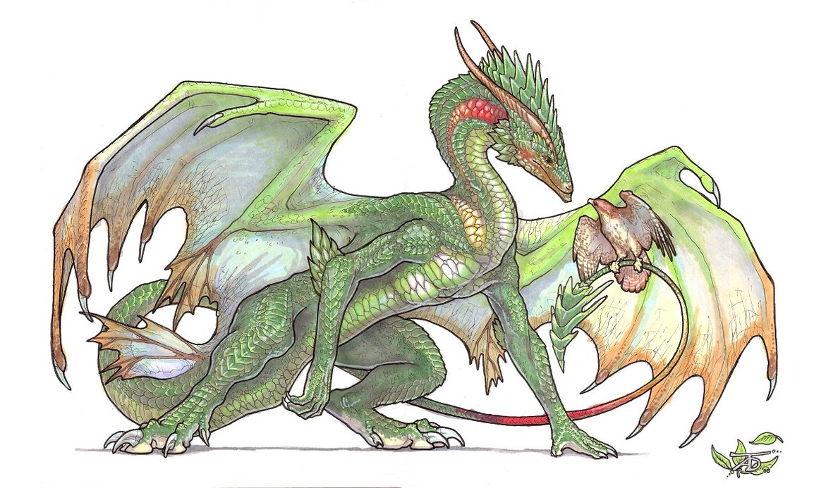
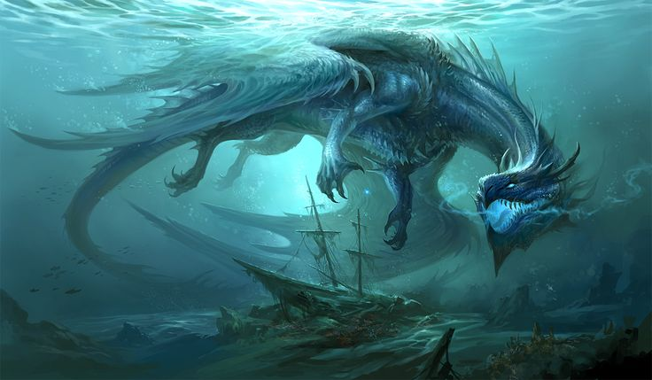
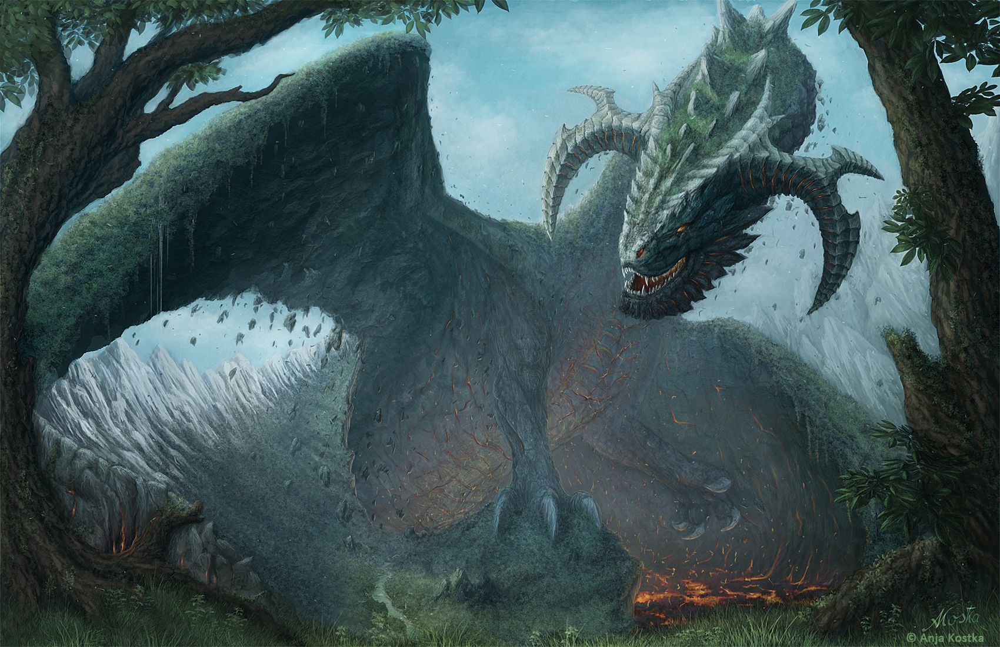

Dragon Species
Here we are going to go over the many different dragon species that roam the land, yet only a few dozen have been discovered so far, thus we will only cover the basic ones that we know the most about. We will go over where they live, a rough estimate of how long they live, behavior and attributes to each species.

Fire Dragons
- Fire dragons live in scorching environments near deserts, hot springs, and volcanoes
- Their fire reaches much higher temperatures than other species and can melt stone within seconds at close proximity
- Fire dragons are aggressive and should be avoided less you want to end up charred
- Scholars who have followed fire dragons over many centuries believe they can live to up to 400+ years
- This species can grow to be taller than a two story building, making them slow yet powerful
- Some breeds of dragons who live near volcanoes often have flames leaping from their scales as their temperature reaches blinding levels
- Fire dragons are usually bright red and orange with splashes of gold and yellow under their chests and wings
- Fire dragons often have sharp spikes going down their spines and up their tail

Forest Dragons
- Forest dragons often live around swamps, deep within forests, or on the base of some mountains
- They can breathe fire and have a poisonous barb on the tip of their tail, similar to Wyverns
- Forest dragons are mellow and don't attack people unless provoked
- Scholars who have followed forest dragons over many centuries believe they can live to up to 750+ years, though this is only speculation built along with the low rate of conflict between them and humans
- This species does not grow to be more than thirteen feet tall
- Forest dragons are usually green or muddy brown in nature, having little pattern to their scales to blend in with their surrounding

Water Dragons
- Water dragons can be found in large lakes and oceans and sometimes in swamps
- They can spew water and create clouds of mist when they feel threatened
- Water dragons are similar to forest dragons in that they don't attack people unless provoked, as they tend to flee rather than stay and confront a situation
- Scholars who have studied over many centuries believe they can live to up to 340+ years, but it suspected there are some who are much older than that due to the fact they are not often seen
- This species can grow to be very large depending on if they live in the ocean or a lake, dwarfing fire dragons in size and weight.
- Water dragons are usually shades of blues and purple
- Most water dragons are not actually dragons, but serpents, lacking proper limps or wings as they glide through the water like an eel
- Water dragons have frills instead of wings to help them maneuver in the water

Earth Dragons
- Earth dragons have been a mystery for a long time, but it is believed they are part of the earth and that they make up many of the mountains and ridges we travel on
- Since Earth dragons are one of the basic dragon species we know the least about, there is not much on how they live or how long they can live for
- They do not breath fire, but their massive size can cause earthquakes for miles around
- Earth dragons are solitary creatures that do not mind the presence of humans, since they have nothing to fear from them
- Because not much is known about Earth dragons, it is believed they live the longest, at more than 900+ years
- This species does not have wings due to their size. They are often mistaken as mountains because of how big they can grow. Very few have seen an Earth dragon smaller than twenty feet
- If an Earth dragon is seen with wings, it is most likely too heavy to fly as the wings are made of rock and dirt
- Earth dragons are dark shades of brown and green to best blend into the land